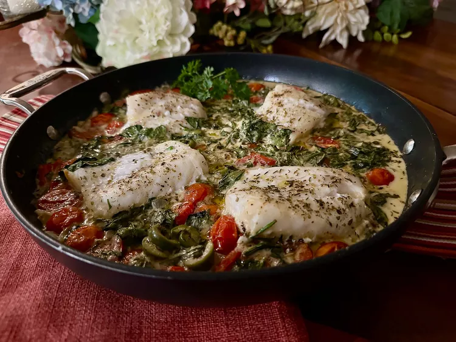

Fish Recipe

How to do?
This Mediterranean baked fish brings more fish to your diet in a satisfying, tasty way, with fish filets baked in a wonderful Mediterranean combination of tomatoes, olives, spinach, wine, and cream. Prepare some fettuccine, rice, or orzo while the fish bakes to serve alongside.
Really tasty!
Ingredients
- 3 tablespoons olive oil, divided
- 1/2 cup chopped onion
- 1 1/2 cups cherry tomatoes, halved
- 1/2 cup dry white whine
- 1 1/2 pounds fish fillets
Steps
- Preheat the oven to 200 degrees C.
- Heat olive oil and cook vegetables.
- Nestle fillets into vegetable mixture.
- Bake in the preheated oven until fish flakes easily with a fork.
- Serve with hot, cooked pasta or rice, and garnish with fresh parsley.